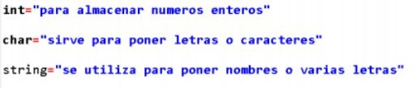
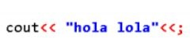
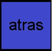

informe c++
que es c++
C ++ es un lenguaje de programación orientado a objetos de alto nivel que ayuda a los programadores a escribir programas rápidos y portátiles. C ++ proporciona soporte de biblioteca enriquecido en forma de biblioteca de plantillas estándar
que son las funciones
Las funciones son códigos que realizan determinadas operaciones. La función puede definir opcionalmente parámetros de entrada para permitir que el llamador o programador pase parámetros a la maquina para que esta las realice. Las funciones también pueden devolver un valor como salida.
¿cuales son?
También nos mostraron diferentes funciones de las cuales podemos distinguir el int, char, boolean, string, float entre otras; algunos ejemplos de para lo que sirven estas funciones son:

Todas estas funciones necesitan la función main.
La función que sirve para imprimir las funciones y la programación es cout y que es cout y para que sirve pues (el codigo cout permite enviar al medio estándar de salida el resultado de expresiones que se le proporcionan)-informacion proporcionada por google

